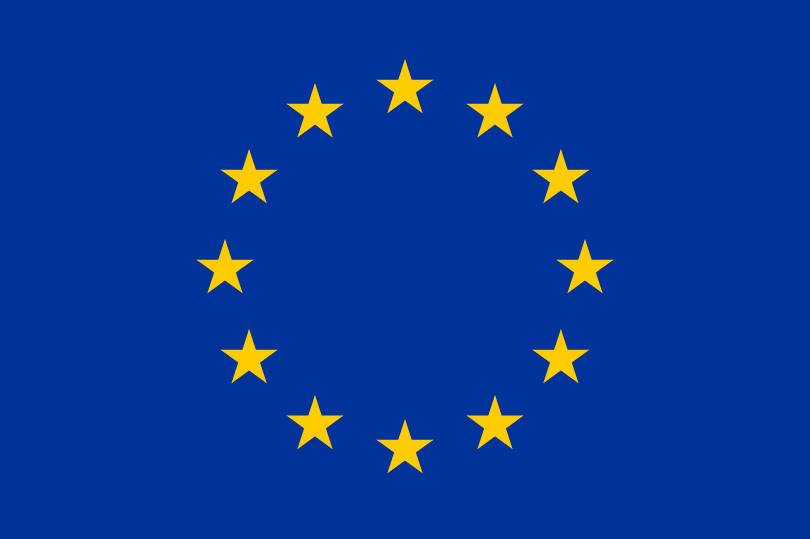
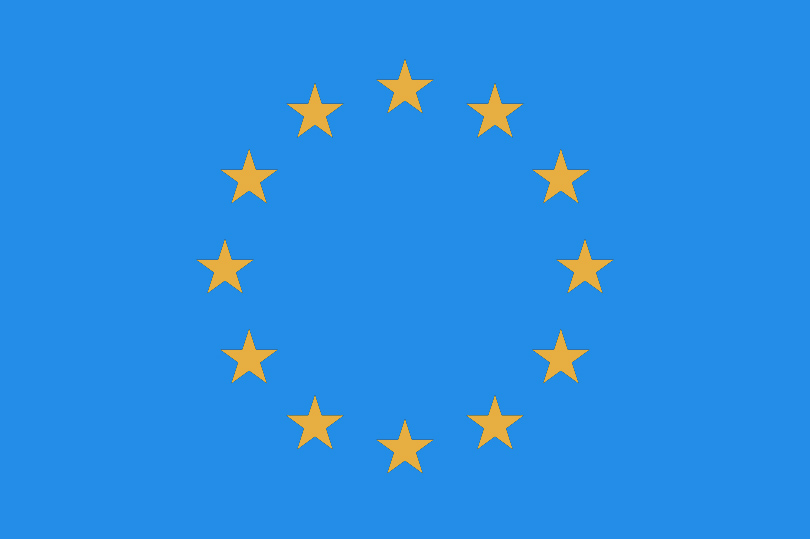
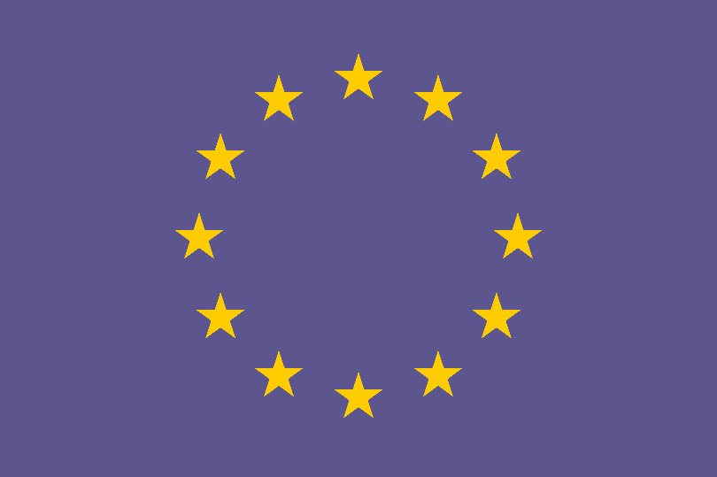
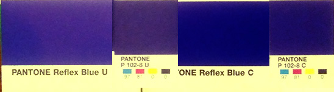
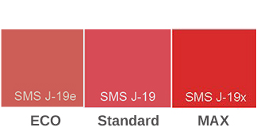
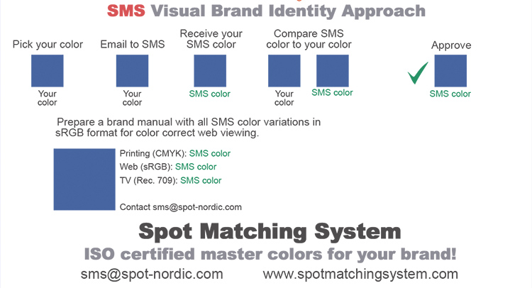
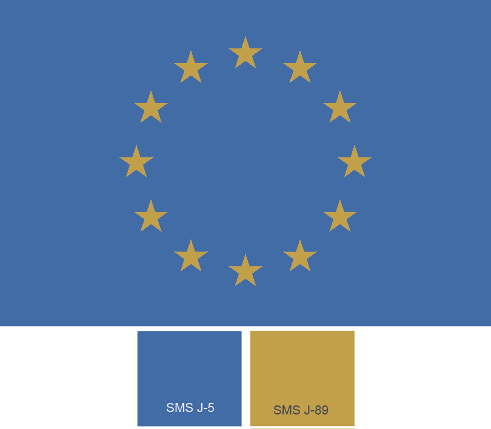

Shop SMS SMS Technical SMS products & services SMS in articles and webinars Testimonies
SMS and the environment SMS news Interesting links SMS: How, why and when SMS Q&A
SMS for design and
advertising Getting started with SMS colours SMS BLOCKS Cost of ownership |
SMS for print Printers (in all categories) SMS READY - or not? |
Spot Matching System
How, why and when is it ideal?
By Ingi Karlsson, creator of the Spot
Matching System
(Updated, June 2024, IK).
When we think about colours, there is one item that is especially close
to my heart, and hopefully yours too. This is the colour of our national
flag. It brings about feeling of belonging and we feel that the colours
of our flag should be respected and kept correct, at any cost (almost) -
just like we are not ok with someone burning our flag in the street or
peeing on it.
If you think about it, of course the colours of your flag are in fact nothing less than the Brand colours of your country.
It should though be kept in mind that most flags were designed
a long time ago, before there were any proper colour matching systems and
long before anyone thought about printing colours in CMYK
and long before some experts on colour found out that colours of brands
should - and since recently, COULD be presented correctly, no matter if
they are being printed on a cloth/textile, on paper, plastic, in CMYK or
as spot colours or displayed on the Internet.
The most popular colour matching system in the world today is of course PANTONE.
In the past flag colours had been defined by specialized textile colour
systems intended only for textile.
And so some 60 years ago or so, the experts got together and came to the
natural conclusion that it would be appropriate to add a formal definition for
those flag colours for other purposes than just the flag itself, so they
could be printed on paper according to a standard.
The natural solution was to find the closest PANTONE colour that looked
close to the original colour of the flag.
I have looked at a few flag colour specifications and typically there is simply one PANTONE colour for each flag colour.
In many cases I don't know if the experts had Pantone C or Pantone U in mind, since of course Pantone C and Pantone U don't look the same = they are not the same colours even if (and because) they share the same recipe when you mix them.
My guess is that most of them had Pantone C (Pantone Formula Guide, Coated version) in mind.
Around 2000, when CMYK printing had become very common worldwide, the experts realized that CMYK values for the national flags were now necessary to standardize the colours of the flags when printed in 4 colour.
Just like with the PANTONE colours, the experts typically added a single CMYK value - i.e. fixed percentages of Cyan, Magenta, Yellow and Black, to the flag colour descriptions.
Same rule applies here: The same CMYK halftone (recipe) will result in one colour when printed on coated paper and another colour when printed on uncoated paper.
So now in reality we find ourselves with a total of 5 different print versions of colours for each flag colour (there may be exceptions - I only base this on what I have found on the Internet):
1) The original textile colour
2) Pantone C (recipe for mixed spot colour)
3) Pantone U (same recipe for mixed spot colour)
4) CMYK C (4 colour variation, fixed percentages)
5) CMYK U (4 colour variation, same fixed percentages)
To proof my point, I decided to take a closer look at a flag that one would assume would be completely bulletproof, when it comes to colour. It represents an entire continent (well a big part of it) and it was intended to be used in it's current colours for years and probably decades.
The description here below in black is from the original website of the EU. The text in green are my own annoying comments.
The official flag of the European Union:

The European flag is so young, that the designers designed it from
scratch using the Pantone Matching System.
Lets have a look at the official usage description of the flag to keep
this fair, written by the creators themselves. To be clear, the official
description here below is in black and blue, my comments in green:
Symbolic description
Against the background of blue sky, 12 golden stars form a circle, representing the union of the peoples of Europe. The number of stars is fixed, 12 being the symbol of perfection and unity.
Gold is not a colour, but a chemical compound. To make things even worse there are several shades of Gold, so assigning GOLD as a colour for a brand or a flag is a nono, at least in our book. It's like assigning BLUE as your colour.
Regulation colours
The emblem
The colours of the emblem are Pantone Reflex Blue for the surface of the rectangle and Pantone Yellow for the stars. The international Pantone range is very widely available and easily accessible, even for non-professionals.
{kind=link}
Personally I have never seen a blue sky that is even close to Pantone Reflex Blue. Reflex Blue is in fact dark blue with a slight reddish/violet shade to it.
Pantone YELLOW on the other hand is very bright, clean yellow, in fact one of the base colours of the PANTONE system. There is however nothing golden about it as far as I can see.
If you happen to have a recent copy of the PANTONE FORMULA GUIDE (C+U) and PANTONE CMYK (C+U) you can look up the colours and see for yourself what I am going on about.
If you start by looking up PANTONE REFLEX BLUE and PANTONE YELLOW in both the Coated version of the PANTONE FORMULA GUIDE and then look up the same colours in your Uncoated guide and keep them open, side by side, first of all you will see that even if the colours have the same name and same recipe, they don't LOOK the same.
That is, as mentioned here above, because you cannot print the same ink (mixed ink) or CMYK combination on two completely different substrates and expect the colours to look the same.
Uncoated
paper absorbs the ink while Coated paper does not.
This is true for any
ink or dye (in the case of textile).
Lets imagine if it was up to me to re-design the EU flag, based on it's description, it would probably look something like this:

Anyway, moving on to the CMYK variation that has been appointed to the EU flag by it's designers:
Four-colour process
If the four-colour process is used, it is not possible to use the two
standard colours. It is therefore necessary to recreate them using the
four colours of the four-colour process. Pantone Yellow is obtained by
using 100 % ‘Process Yellow’.
By mixing 100 % ‘Process Cyan’ with 80 % ‘Process Magenta’ one can get a
colour very similar to Pantone Reflex Blue.
Process colours are in general printed on top of each other, not mixed, so this description does not inspire much confidence in the technical know-how of the creators.
The designers obviously did not take into
account that the colours of the EU would ever be printed on uncoated
substrates, including plain, uncoated paper. Thus it would have been
useful to make this clear, and to ban printing of the EU colours on
uncoated paper for official use.
This is roughly what the EU flag
looks like when printed on COATED substrate with 100c80m.
{kind=link}
I hate to admit it but this is actually not bad, even if it will not look like the original Reflex Blue of course (please refer to your Pantone CMYK C guide, page 102, colour P 102-8-C (97%c81%m) and compare it to the PANTONE FORMULA GUIDE C.
Now, lets have a look at what the CMYK colour variation looks like, when printed on uncoated paper, - lets say in a newspaper or on an uncoated flyer, invitation card, envelope, letterhead etc.
It will look approx something like this:

I took a picture of all versions of the EU blue colours from all 4 Pantone guides. My guides are not quite new and of course the gamut is s-rgb for web uses so the colours are not exact, but they give you a pretty good idea of the massive colour differences between the original flag colour and the blue colour that has been considered acceptable for presenting the EU in print for many years.

Please refer to your Pantone CMYK U guide page 102, colour P 102-8-C (97%c81%m and your Pantone Formula Guide (C) and Pantone Formula Guide (U) for a closer look.
It should also be noted that the description for the EU flag is an even 100%c80%m so this is not precicely the result - but it is close enough to make my point.
I might also point out that there is no specification as to the print standard - whether the CMYK values are intended for printing in accordance with ISO 12647-2-2004/AMD 2007, ISO 12647-2-2013 or another print standard, perhaps GraCol/G7 or whatever. This matters since the dotgain/tonal value increase/TVI in offset printing between these standards are different and basically a higher dotgain/TVI means a darker outcome for each colour when printed.
To me, this is not acceptable.
When it comes to selecting brand colours, intended to be used over and over again for various purposes, in various media and which will need to pass through various printing methods, dying of textile and even colouring for plastic, paint and whatever else may come along where you want your colours correctly presented, I propose the following approach:
Step one:
Pick out the colours that you are happy with from any colour matching system.
If you are starting a new job or a re-brand, I recommend using the SMS colour palette of 1.738 base colours, available in 3 different categories see www.spotmatchingsystem.com/gettingstarted.

ECO version,
which is the dullest SMS colour palette visually BUT those colours can
basically be printed in any media - from your local newspaper and on
recycled, off-white, uncoated paper to premium, gloss coated paper, for
the web and for Television, in addition to Textile and Plastics.
This palette was built primarily for environmentally concious customers
that place a lot of emphasis on minimizing their carbon footprint and
dull colours printed on off-white, rough, uncoated paper are in fact
appropriate to show what they stand for.
See in this context information about the environmental advantages of using the Spot Matching System colours here). This is valid for all 3 versions of the SMS colour palettes to be clear.
Standard version. This is the original SMS colour palette which is more vibrant than the ECO palette and can best be described as "natural". It is available for standardized CMYK/process printing to universal standards on white, coated and uncoated paper, for the web and for Television, in addition to Textile and Plastics.
MAX version, which is the most vibrant/vivid colour palette, well suited for standardized CMYK/process printing on white, coated paper, for the web and for Television, in addition to Textile and Plastics. This palette was built primarily for packaging brands, where vivid colours are an asset.
You are however in no way restricted to use the SMS colour palettes at this stage. You can measure your own colours or define colours from other colour matching systems. You can even use the web version of an older logo to select your colours. Just make sure to keep track of the origin of the colours you are working with at this stage.
Step two:
Once you have selected your colours and optionally set up your visual brand identity on one page, with all colour variants you need, you can send it to support@spotmatchingsystem.com and order what variation of our SMS colours you need (ECO, Standard, MAX) and we will find the closest SMS colours to match your colours for the requested print condition (for instance Fogra 39, or GRACOL).
Update: 06.2024: You may optionally do your own colour conversion in Photoshop - see instructions here.
If you did not use the SMS colour palettes but colours from another colour matching system you can order the SKU number P10:
| P10: |
SMS custom colour(s):
Existing logo / layout page converted to the SMS colour space of you choice (Standard, ECO or MAX). Delivered in sRGB format. 1 year of service (brand license) included. Delivered in sRGB, PDF format. EUR 140 per page Order |
In the case of non-SMS colours, don't forget to provide information about the source of the colours. Send the logo or layout in high resolution (300 dpi) in PDF format and embed the icc profile, whether it is RGB or CMYK format.
Our proposed colour for
your application will be either an existing SMS colour number or it will
be a custom SMS colour that we can name what you want us to name it, and
safe it to our files if you need us to look it up for you until you
choose to stop using it.
All SMS colours are also available for web design and television - in fact you can download the basic version of all first 500 standard colours for the web and for TV for free at www.spotmatchingsystem.com/services if you just want to have a look.
However, to order standard SMS colours (ECO, Standard or MAX) for Print or Manufacture of any kind, you need to own at least the sRGB version (for web) of the colour palette you are ordering for (ECO, Standard, MAX) - i.e. you need to be a registered user of the Spot Matching System.
The SKU numbers for the sRGB palettes are P20 for the Standard version,
P20e for the ECO version and P20x for the MAX version.
That is what defines SMS and sets it apart from other colour matching
systems first and foremost - the perfect colourimetric accuracy of our
colours cross-media.
CMYK printing is the most commonly used printing method in printing
today and it has the narrowest colour gamut, although it is pretty big. That is why you should begin
there.
Our job is to assist you in building a colour palette for your
"day-to-day" colours that are presented to the public in your
advertisements and marketing efforts, - your Brand colours.
Step three:
You can optionally order a printed (certified) SMS proof in A4 (approx. US Letter) format from us, with the colours that we find to be closest to what you want and you then either approve or decline.
Step four:
Along with your new colours in SMS format, we will also send you exact instructions on which settings you should use when you prepare PDF documents for your printers and the appropriate icc profile will be embedded to the PDF file we send to you to avoid any misunderstanding.
This is it. You now have your SMS base colours.
If we try to set this up in a diagram, it will look something like this. The approach is referred to as the SMS Visual Brand Identity Approach and to our best knowledge, it is the only approach available that opens the door for brand owners for perfect brand colour consistency for any media and any substrate, using in fact cutting edge colour management, with a user friendly interface for designers.

At this time of course you can order custom colour proofs of the logo and
the chosen SMS colours that you can use to send out to anyone who is
responsible for reproducing the colour(s) from then on.
You decide whether you want the coated or uncoated version for your SMS
proofs - or perhaps both.
The SMS colours on the coated and the uncoated proof will look identical
when you compare them, side by side, so it is in fact enough for you to
order either a coated or uncoated proof from us.
If you are a sceptic like me and wonder if we can actually do what we promise, order both coated and uncoated proofs and measure the colours with a spectrophotometer to convince yourself that your colours are identical whether you want to print them in CMYK on coated or uncoated paper.
Keep in mind that our proofs are certified according to ISO 12647-7-2016. That means that the proofer has done an inline check of the paper/proofing media we print on as well as 71 known CMYK colour combinations called the Fogra Media Wedge, which is printed on each of our proofs. That again means that each of our CMYK colour combinations are as close to what they should look like from your printer as you will ever get.
You can also try having your printer print both variations to further
convince yourself that SMS works. Just make sure to pick a
printer/Printshop that prints according to international standard - ISO
12647-2-2013 or at least ISO 12647-2-2004/AMD 2007.
This is THE global standard for CMYK printing in offset. The 2013
version is the current standard, 2004/AMD 2007 is the old standard but
some printers still use it. We can adjust to that if needed.
If you are going to have the colours printed in a newspaper, gravure,
flexo or digital, preferably the printers should be able to
accept files from you or your
advertising agency/designer where the Fogra 51 icc output profile is
used for preparing jobs intended for printing on coated paper and the
Fogra 52 icc output profile for jobs intended for printing on uncoated
paper.
Optionally, you may provide us with the CMYK icc profile recommended for you to use by your printer and we can provide just the right CMYK colour variation that fits their print standard (new feature, June 2019).
Professional printers that print to other standards than ISO 12647-2 should have their own inhouse conversion / device link profiles to adapt the colours to their own process, to ensure correct colour outcome from printing.
If they are not willing to accept files prepared to this current ISO standard, please find another printer that can, if you want your SMS colours to be printed correctly.
Once you are convinced that your new SMS base colours print correctly in CMYK, you can dive into locating colours from textile systems, Pantone, RAL, Avery or whatever your application is, to match our SMS colours - or we can do it for you for a modest fee.
If you are in charge of a medium to big company or brand, the easiest approach is to subscribe to SMS - see www.spotmatchingsystem.com/services.
The result:
A complete set of colours for any purpose where your colours are kept
correct and consistent, no matter where.
That is what any brand deserves.
The rule of thumb is: You can usually find or get a custom mix of a colour from existing spot colour systems that is really close to a known CMYK colour combination and it is at the same time usually very hard to find a modestly correct CMYK colour that looks like a colour picked from most spot colour matching systems in the market.
Addition, June 2024 IK
To put my money where my mouth is - and instead of just ranting about the design of the EU flag, which was of course designed many years before the Spot Matching System came along, using methods that at that time were standard procedures for brand design, here is a proposed version of the EU flag, where I use Standard SMS colours from the latest version of the system - version 6. This is by no means and official proposal, - although I would of course encourage the EU to consider the colours of the Spot Matching System to enable easy reproduction of their colours to international standards.
So here is an idea of what the EU flag could look like, - say if the designers wanted sky blue + golden stars.
This is of course the colour of the sky over Iceland on a brisk, automn day, nota bene, since the Spot Matching System is Icelandic.

Sky Blue: LAB value: 45, -1, -36
Gold: LAB value 68, 6, 49
No matter what you are doing, these LAB values are constant and absolute, regardless of media.
They can be checked in Adobe Photoshop and for print, paint or dyes, the colours should be measured with a proper 0/45 spectral instrument, such as for instance the TECHKON SpectroDens Advanced or Premium - see www.techkon.com (which has the SMS Standard v6 colour palette built-in).
Whether you hate the colours or love them, - or something in between, the primary advantage of using SMS Standard v6 colours is that they remain visually the same online (like here above) - in sRGB format, on Television (in Rec. 709 format) and in standard CMYK printing to the following industry standards (ISO 12647):
SMS Standard v6 colours are suited for brand design, web design, game and app design/UI (sRGB), TV/Video Graphics (REC 0709/REC 2020) and for printing according to the following international standards (analog and digital printing):
Textile: Fogra 58 RGB, Dyes to 0/45 LAB specs
White, Coated paper: Fogra 39 (ISO Coated v2), GRACoL Coated 2006, Japan Color 2011, Fogra 51 (PSO Coated v3) and GRACoL CGATS21-2 CRPC6.
White, Uncoated paper: Fogra 47L (ISO Uncoated v2), Fogra 52 (PSO Uncoated v3) and CGATS21-2 CRPC3
Contact support@spotmatchingsystem.com if you have a project and wish to switch to SMS colours.
Shop SMS SMS Technical SMS products & services SMS in articles and webinars
SMS and the environment SMS news Interesting links SMS: How, why and when SMS Q&A
|
SMS for design and
advertising Getting started with SMS colours SMS BLOCKS |
SMS for print Printers (in all categories) SMS test forms |
Spot-Nordic,
Spóahólar 4, 111 Reykjavik, Iceland
Phone: +354 896 9790
E-mail:
support@spotmatchingsystem.com